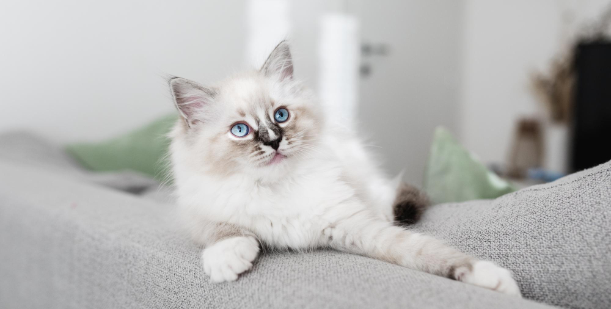

TODO: Transforme o texto "Voltar" abaixo em hiperlink que leva o usuário para a página com o sumário de todos os gatos
VoltarSeu nome, que significa “boneca de trapos”, indica uma característica: relaxar completamente quando o pegamos no colo. É tão dócil que permite ser colocado de um lado para o outro, algo com que nem todos os gatos concordam.
